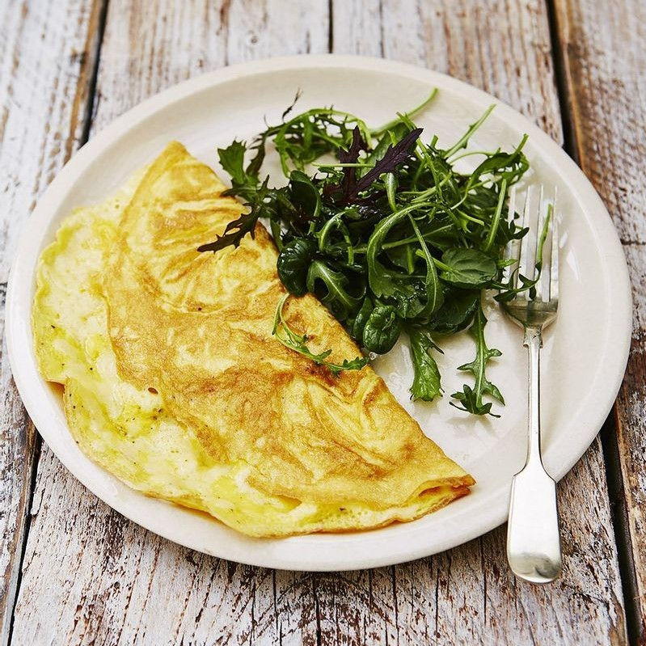

Omelette

Description
A tasty breakfast, lunch or dinner in no time. Plain or with veggies, omelettes are really easy to knock together and super-satisfying.
Ingredients
- 2 large free-range eggs
- 1 small knob of unsalted butter
- 1 small handful of grated Cheddar cheese (optional)
Steps
- For a basic omelette, crack the eggs into a mixing bowl with a pinch of sea salt and black pepper. Beat well with a fork.
- Heat a small knob of butter in a small frying pan on a low heat, and once melted and bubbling, add the eggs and move the pan around to spread them out evenly.
- When the omelette begins to cook and firm up, but still has a little raw egg on top, sprinkle over the cheese (if using). I sometimes grate mine directly on to the omelette.
- Using a spatula, ease around the edges of the omelette, then fold it over in half. When it starts to turn golden brown underneath, remove the pan from the heat and slide the omelette on to a plate.